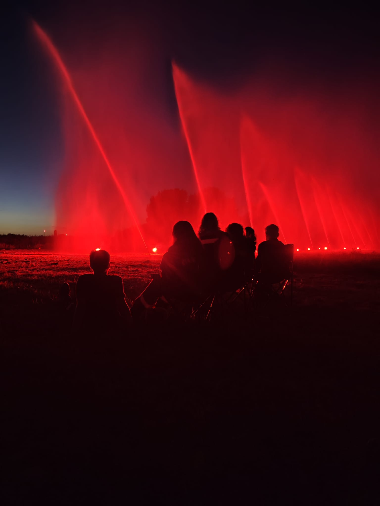

Seit den 60ern
Es war einmal ein Fährmann...
... welcher in den 60er Jahren sein kleines Boot festlich mit Lampions und Laternen schmückte, um in der Dunkelheit seinen Gästen ein besonderes Lichtschauspiel zu bieten.
Er ahnte sicher nicht, dass Jahre später aus dieser Idee ein Event entstand, dass noch heute tausende, begeisterte Zuschauer aus ganz Norddeutschland in den kleinen Ort Drage lockt.
Mehr als 6.000 Zuschauer finden sich alljährlich auf dem Festplatz im Ort ein, um dabei zu sein, wenn es im dritten Augustwochenende heißt "Die Elbe brennt". Ein Höhenfeuerwerk, dass in seiner Größe in Norddeutschland seines Gleichen sucht. Gleichzeitig bildet es den krönenden Abschluss eines Festwochenendes.
